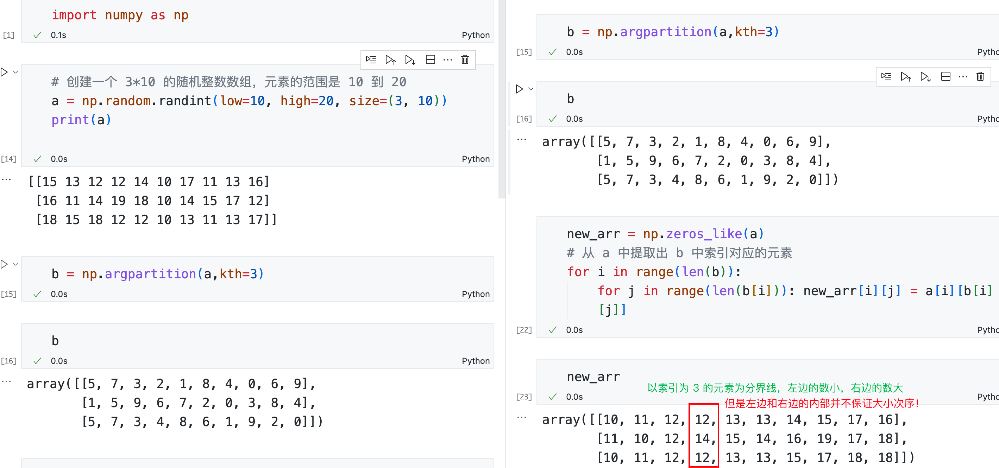

NumPy 数组¶
创建数组¶
创建随机数组¶
np.random.rand(10)
# array([ 0.56911206, 0.99777291, 0.18943144, 0.19387287, 0.75090637,
# 0.18692814, 0.69804514, 0.48808425, 0.79440667, 0.66959075])
- 上面的代码生成 [0.0, 1.0) 之间的随机浮点数，当没有参数时，返回一个随机浮点数，当有一个参数时，返回该参数长度大小的一维随机浮点数数组。
np.random.randn(10)
# array([-1.6765704 , 0.66361856, 0.04029481, 1.19965741, -0.57514593,
# -0.79603968, 1.52261545, -2.17401814, 0.86671727, -1.17945975])
- 上面的代码返回一个随机数组，具有标准正态分布。
- 上面的代码返回随机的整数，位于半开区间 [low, high)。
生成相同元素组成的数组¶
对每一个元素应用同一个函数¶
方法一：np.vectorize()¶
要对 NumPy 数组中的每个元素应用一个函数，可以使用 NumPy 的 np.vectorize() 函数。np.vectorize() 函数可以将一个普通的 Python 函数转化为适用于 NumPy 数组的函数。
下面是一个示例，演示如何对 NumPy 数组中的每个元素应用一个函数：
import numpy as np
# 定义一个函数，将元素加倍
def double(x):
return 2 * x
# 创建一个 NumPy 数组
arr = np.array([1, 2, 3, 4, 5])
# 使用 np.vectorize() 函数将函数转化为适用于 NumPy 数组的函数
vectorized_double = np.vectorize(double)
# 应用函数到数组的每个元素
result = vectorized_double(arr)
print(result)
输出结果为：
在上面的示例中，我们定义了一个名为 double() 的函数，它将输入的值加倍。然后，我们使用 np.vectorize() 函数将该函数转化为适用于 NumPy 数组的函数 vectorized_double。最后，我们将 vectorized_double 函数应用到 NumPy 数组 arr 的每个元素上，得到了每个元素加倍的结果。
np.vectorize() 并没有优化性能，其本质仍是 for 循环
官方文档：The vectorize function is provided primarily for convenience, not for performance. The implementation is essentially a for loop.
方法二：np.frompyfunc()¶
经测试，np.frompyfunc() 耗时仅为 np.vectorize() 的约 30%。在同样的运算量下，前者需 1 秒，后者需 3 秒。
import numpy as np
# 定义一个函数，将元素加倍
def double(x):
return 2 * x
# 使用 numpy.frompyfunc() 将函数转化为通用函数
ufunc_double = np.frompyfunc(double, 1, 1)
# 创建一个 NumPy 数组
arr = np.array([1, 2, 3, 4, 5])
# 应用通用函数到数组的每个元素
result = ufunc_double(arr)
# 将结果转换为 NumPy 数组
result = np.array(result)
print(result)
矩阵求和：两个矩阵按元素求和，若有空值则相加得 0¶
参考：https://stackoverflow.com/a/50642601/
矩阵除法：两个矩阵按元素求商，若遇到分母为 0 则将结果设为 0¶
a = np.array([-1, 0, 1, 2, 3], dtype=float)
b = np.array([0, 0, 0, 2, 2], dtype=float)
c = np.divide(a, b, out=np.zeros_like(a), where=b != 0)
# >>> print(c)
# [ 0. 0. 0. 1. 1.5]
参考：https://stackoverflow.com/a/37977222/
在一个已排序的数组中，找到某个元素应该插入的位置¶
参考：https://numpy.org/doc/stable/reference/generated/numpy.searchsorted.html
import numpy as np
a = np.array([1, 2, 4, 4, 4, 6])
v = np.array([0, 1, 2, 3, 4, 5, 6, 7])
print(np.searchsorted(a, v))
# [0 0 1 2 2 5 5 6]
print(np.searchsorted(a, v, side="right"))
# [0 1 2 2 5 5 6 6]
读取txt文件¶
参考：https://numpy.org/doc/stable/reference/generated/numpy.loadtxt.html
导出txt文件¶
参考：https://numpy.org/doc/stable/reference/generated/numpy.savetxt.html
np.savetxt(
"test.txt",
my_array,
fmt="%d",
delimiter=",",
header="col_name_1,col_name_2,col_name_3",
comments="",
)
comments 可以避免第一行的列名出现 #。参考：https://stackoverflow.com/a/17361181/
向量内积¶
import numpy as np
# 创建两个数组
a = np.array([1, 2, 3])
b = np.array([4, 5, 6])
# 计算内积
dot_product = np.dot(a, b)
print(dot_product)

向量外积¶
一个n*1 的列向量乘以一个1*n 的行向量，得到的是一个n*n 的矩阵。如果用a*b、np.dot(a, b)，得到的都是两个列向量的内积，即一个标量，并不是我们想要的矩阵。
可以用np.outer实现。

计算相关系数矩阵¶
如果只需要计算 Pearson 相关系数，可以用 numpy.corrcoef。
注意 rowvar 参数指定了：一行为一个观测值或一列为一个观测值。
如果需要计算 Spearman 秩相关系数，需要用 scipy.stats.spearmanr。
注意 axis 参数指定了：一行为一个观测值或一列为一个观测值。
将一个上三角形矩阵转换为对称矩阵¶
将矩阵的对角线元素全部设为 1¶
将两个矩阵拼接成广义上的对角矩阵¶
可以使用 NumPy 库的block函数将两个矩阵拼接成广义上的对角矩阵。具体实现如下：
import numpy as np
# 假设有两个 3x3 的矩阵 A 和 B
A = np.array([[1, 2, 3], [4, 5, 6], [7, 8, 9]])
B = np.array([[10, 11, 12], [13, 14, 15], [16, 17, 18]])
# 使用 block 函数将 A 和 B 拼接成广义上的对角矩阵 C
C = np.block([[A, np.zeros((3, 3))], [np.zeros((3, 3)), B]])
print(C)
输出结果为：
[[ 1. 2. 3. 0. 0. 0.]
[ 4. 5. 6. 0. 0. 0.]
[ 7. 8. 9. 0. 0. 0.]
[ 0. 0. 0. 10. 11. 12.]
[ 0. 0. 0. 13. 14. 15.]
[ 0. 0. 0. 16. 17. 18.]]
其中，np.zeros((3, 3))表示一个 3x3 的全零矩阵，np.block函数将四个子矩阵按照指定位置拼接起来。
拼接多个切片¶
参考：
https://numpy.org/doc/stable/reference/generated/numpy.r_.html
https://stackoverflow.com/a/30597960/
双冒号切片¶
基本形式：[开始：结束：步长]
例：步长 step=n，代表从 start 开始（包括 start）每隔 step 间隔，取一个数，一直到结尾 end（不包括 end）。
例：当 step 等于负数的时候，从右向左取数。
对数组中的元素计数¶
a = np.array([0, 3, 0, 1, 0, 1, 2, 1, 0, 0, 0, 0, 1, 3, 4])
unique, counts = np.unique(a, return_counts=True)
>>> dict(zip(unique, counts))
{0: 7, 1: 4, 2: 1, 3: 2, 4: 1}
堆叠成新数组¶
hstack是 horizontal，左右水平堆叠。

vstack是 vertical，上下垂直堆叠。

计算非空值的个数¶
排序后的索引值¶
返回从小到大排序后的索引值。

找出每行中最小或最大的 k 个数¶

用一个数组的元素作为索引，取出另一个数组中的元素¶
我们需要从 a 中提取元素。b 是另一个数组，其中的值就是要从 a 中取出的元素的索引。
例如，若 b[1, 1] = 5，这意味着我需要在新的数组中的第二行第二列显示a[1, 5]的数值。
new_arr = np.zeros_like(b)
for i in range(len(b)):
for j in range(len(b[i])):
new_arr[i][j] = a[i][b[i][j]]
效果示例见“找出每行中最小或最大的 k 个数”。
生成等差数组¶
默认左右都是闭区间。
可以指定endpoint参数（默认为True）来设置是否包含最后一个数字：
将数据分成多个 bins（桶、箱）¶
np.histogram 的用法：
https://numpy.org/doc/stable/reference/generated/numpy.histogram.html

计算熵¶
接np.histogram对数据进行分桶后，可以计算熵以衡量数据的分散程度：
交叉熵损失函数介绍了熵的定义。
防止 Numpy 输出宽矩阵时自动换行¶
在 Numpy 中，打印矩阵时默认会自动换行，以适应输出窗口的尺寸。如果想要防止自动换行，可以设置 Numpy 的打印选项。
具体来说，可以使用以下代码使 Numpy 不自动换行：
其中，np.set_printoptions()是 Numpy 的打印选项函数，可以用来设置打印矩阵时的一些参数。linewidth参数指定了输出的每行字符数的最大值，将其设置为np.inf意味着没有限制，可以输出任意长的行。
注意，使用np.set_printoptions()设置的打印选项会对整个 Numpy 库生效，因此如果要恢复默认的行宽限制，需要重新调用一次np.set_printoptions()，并重新指定一个较小的行宽限制。
NumPy 100 道练习题¶
以下题目来自：https://github.com/rougier/numpy-100。通读一遍后，有些函数和用法是很值得学习的。
1. Import the NumPy package under the name np (★☆☆)¶
hint: import … as
2. Print the NumPy version and the configuration (★☆☆)¶
hint: np.__version__, np.show_config)
3. Create a null vector of size 10 (★☆☆)¶
hint: np.zeros
4. How to find the memory size of any array (★☆☆)¶
hint: size, itemsize
或直接使用
参考：
https://numpy.org/doc/stable/reference/generated/numpy.ndarray.itemsize.html
https://stackoverflow.com/a/11784399/
5. How to get the documentation of the NumPy add function from the command line? (★☆☆)¶
hint: np.info
Note
np.info()会获取文档，更简洁易读。而help()会获取源代码。
6. Create a null vector of size 10 but the fifth value which is 1 (★☆☆)¶
hint: array[4]
7. Create a vector with values ranging from 10 to 49 (★☆☆)¶
hint: arange
8. Reverse a vector (first element becomes last) (★☆☆)¶
hint: array[::-1]
9. Create a 3x3 matrix with values ranging from 0 to 8 (★☆☆)¶
hint: reshape
10. Find indices of non-zero elements from [1,2,0,0,4,0] (★☆☆) 非零元素的索引¶
hint: np.nonzero
11. Create a 3x3 identity matrix (★☆☆) 对角矩阵¶
hint: np.eye
12. Create a 3x3x3 array with random values (★☆☆) 创建随机矩阵¶
hint: np.random.random
13. Create a 10x10 array with random values and find the minimum and maximum values (★☆☆)¶
hint: min, max
14. Create a random vector of size 30 and find the mean value (★☆☆)¶
hint: mean
15. Create a 2d array with 1 on the border and 0 inside (★☆☆)¶
hint: array[1:-1, 1:-1]
16. How to add a border (filled with 0's) around an existing array? (★☆☆) 在矩阵周围加上一圈¶
hint: np.pad
Z = np.ones((5, 5))
Z = np.pad(Z, pad_width=1, mode="constant", constant_values=0)
print(Z)
# Using fancy indexing
Z[:, [0, -1]] = 0
Z[[0, -1], :] = 0
print(Z)
np.random.seed(1)
x = np.random.randn(3, 3)
np.pad(x, ((1, 2), (1, 1)), "constant", constant_values=(0, 0))
17. What is the result of the following expression? (★☆☆) 空值的相关判断¶
0 * np.nan
np.nan == np.nan
np.inf > np.nan
np.nan - np.nan
np.nan in set([np.nan])
0.3 == 3 * 0.1
hint: NaN = not a number, inf = infinity
print(0 * np.nan)
print(np.nan == np.nan)
print(np.inf > np.nan)
print(np.nan - np.nan)
print(np.nan in set([np.nan]))
print(0.3 == 3 * 0.1)
0.3 == 3 * 0.1 是由于浮点数运算的精度引起的。

18. Create a 5x5 matrix with values 1,2,3,4 just below the diagonal (★☆☆)¶
hint: np.diag
k=-1 代表了向下一格的对角线。

19. Create a 8x8 matrix and fill it with a checkerboard pattern (★☆☆)¶
hint: array[::2]
Z = np.zeros((8, 8), dtype=int)
Z[1::2, ::2] = 1
Z[::2, 1::2] = 1
print(Z)
# Alternative solution: Using reshaping
arr = np.ones(64, dtype=int)
arr[::2] = 0
arr = arr.reshape((8, 8))
print(arr)
20. Consider a (6,7,8) shape array, what is the index (x,y,z) of the 100th element? (★☆☆) 找到第几个元素的索引¶
hint: np.unravel_index
21. Create a checkerboard 8x8 matrix using the tile function (★☆☆) 将一个矩阵在多个维度上重复几遍¶
hint: np.tile
22. Normalize a 5x5 random matrix (★☆☆)¶
hint: (x -mean)/std
23. Create a custom dtype that describes a color as four unsigned bytes (RGBA) (★☆☆)¶
hint: np.dtype
24. Multiply a 5x3 matrix by a 3x2 matrix (real matrix product) (★☆☆)¶
hint:
Z = np.dot(np.ones((5, 3)), np.ones((3, 2)))
print(Z)
# Alternative solution, in Python 3.5 and above
Z = np.ones((5, 3)) @ np.ones((3, 2))
print(Z)
25. Given a 1D array, negate all elements which are between 3 and 8, in place. (★☆☆)¶
hint: >, <
26. What is the output of the following script? (★☆☆)¶
# Author: Jake VanderPlas
print(sum(range(5), -1))
from numpy import *
print(sum(range(5), -1))
hint: np.sum

# Author: Jake VanderPlas
print(sum(range(5), -1))
from numpy import *
print(sum(range(5), -1))
27. Consider an integer vector Z, which of these expressions are legal? (★☆☆)¶
No hints provided...
28. What are the result of the following expressions? (★☆☆)¶
np.array(0) / np.array(0)
np.array(0) // np.array(0)
np.array([np.nan]).astype(int).astype(float)
No hints provided...
print(np.array(0) / np.array(0))
print(np.array(0) // np.array(0))
print(np.array([np.nan]).astype(int).astype(float))
29. How to round away from zero a float array ? (★☆☆) 改变数组的正负号¶
hint: np.uniform, np.copysign, np.ceil, np.abs, np.where
np.copysign：
copysign(x1, x2, /, out=None, *, where=True, casting='same_kind', order='K', dtype=None, subok=True[, signature, extobj])
Change the sign of x1 to that of x2, element-wise.
If `x2` is a scalar, its sign will be copied to all elements of `x1`.
# Author: Charles R Harris
Z = np.random.uniform(-10, +10, 10)
print(np.copysign(np.ceil(np.abs(Z)), Z))
# More readable but less efficient
print(np.where(Z > 0, np.ceil(Z), np.floor(Z)))
30. How to find common values between two arrays? (★☆☆) 取交集¶
hint: np.intersect1d
Z1 = np.random.randint(0, 10, 10)
Z2 = np.random.randint(0, 10, 10)
print(np.intersect1d(Z1, Z2))
31. How to ignore all NumPy warnings (not recommended)? (★☆☆) 忽略警告¶
hint: np.seterr, np.errstate
# Suicide mode on
defaults = np.seterr(all="ignore")
Z = np.ones(1) / 0
# Back to sanity
_ = np.seterr(**defaults)
# Equivalently with a context manager
with np.errstate(all="ignore"):
np.arange(3) / 0
32. Is the following expressions true? (★☆☆)¶
hint: imaginary number
33. How to get the dates of yesterday, today and tomorrow? (★☆☆) datetime 格式¶
hint: np.datetime64, np.timedelta64
yesterday = np.datetime64("today") - np.timedelta64(1)
today = np.datetime64("today")
tomorrow = np.datetime64("today") + np.timedelta64(1)
34. How to get all the dates corresponding to the month of July 2016? (★★☆) 时间区间里的所有天数¶
hint: np.arange(dtype=datetime64['D'])
35. How to compute ((A+B)*(-A/2)) in place (without copy)? (★★☆) 使用out=直接赋值给变量¶
hint: np.add(out=), np.negative(out=), np.multiply(out=), np.divide(out=)
A = np.ones(3) * 1
B = np.ones(3) * 2
np.add(A, B, out=B)
np.divide(A, 2, out=A)
np.negative(A, out=A)
np.multiply(A, B, out=A)
36. Extract the integer part of a random array of positive numbers using 4 different methods (★★☆) np.trunc 取离 0 最近的整数¶
hint: %, np.floor, astype, np.trunc
Z = np.random.uniform(0, 10, 10)
print(Z - Z % 1)
print(Z // 1)
print(np.floor(Z))
print(Z.astype(int))
print(np.trunc(Z))
37. Create a 5x5 matrix with row values ranging from 0 to 4 (★★☆)¶
hint: np.arange
Z = np.zeros((5, 5))
Z += np.arange(5)
print(Z)
# without broadcasting
Z = np.tile(np.arange(0, 5), (5, 1))
print(Z)
38. Consider a generator function that generates 10 integers and use it to build an array (★☆☆)¶
hint: np.fromiter
def generate():
for x in range(10):
yield x
Z = np.fromiter(generate(), dtype=float, count=-1)
print(Z)
39. Create a vector of size 10 with values ranging from 0 to 1, both excluded (★★☆)¶
hint: np.linspace
40. Create a random vector of size 10 and sort it (★★☆)¶
hint: sort
41. How to sum a small array faster than np.sum? (★★☆)¶
hint: np.add.reduce
42. Consider two random array A and B, check if they are equal (★★☆) 判断两个数组是否相等¶
np.allclose 可以允许存在一定的偏差，np.array_equal 必须完全一样。
hint: np.allclose, np.array_equal
A = np.random.randint(0, 2, 5)
B = np.random.randint(0, 2, 5)
# Assuming identical shape of the arrays and a tolerance for the comparison of values
equal = np.allclose(A, B)
print(equal)
# Checking both the shape and the element values, no tolerance (values have to be exactly equal)
equal = np.array_equal(A, B)
print(equal)
43. Make an array immutable (read-only) (★★☆) 使数组变得不可更改（只读）¶
hint: flags.writeable
44. Consider a random 10x2 matrix representing cartesian coordinates, convert them to polar coordinates (★★☆)¶
hint: np.sqrt, np.arctan2
Z = np.random.random((10, 2))
X, Y = Z[:, 0], Z[:, 1]
R = np.sqrt(X**2 + Y**2)
T = np.arctan2(Y, X)
print(R)
print(T)
45. Create random vector of size 10 and replace the maximum value by 0 (★★☆)¶
hint: argmax
46. Create a structured array with x and y coordinates covering the [0,1]x[0,1] area (★★☆) 生成网格数据，使用np.zeros时可以给定列名¶
hint: np.meshgrid
Z = np.zeros((5, 5), [("x", float), ("y", float)])
Z["x"], Z["y"] = np.meshgrid(np.linspace(0, 1, 5), np.linspace(0, 1, 5))
print(Z)
47. Given two arrays, X and Y, construct the Cauchy matrix C (Cij =1/(xi - yj)) (★★☆)¶
hint: np.subtract.outer
# Author: Evgeni Burovski
X = np.arange(8)
Y = X + 0.5
C = 1.0 / np.subtract.outer(X, Y)
print(np.linalg.det(C))
48. Print the minimum and maximum representable value for each NumPy scalar type (★★☆) 各种dtype能表示的数据范围¶
hint: np.iinfo, np.finfo, eps
for dtype in [np.int8, np.int32, np.int64]:
print(np.iinfo(dtype).min)
print(np.iinfo(dtype).max)
for dtype in [np.float32, np.float64]:
print(np.finfo(dtype).min)
print(np.finfo(dtype).max)
print(np.finfo(dtype).eps)
49. How to print all the values of an array? (★★☆) 打印所有行¶
hint: np.set_printoptions
50. How to find the closest value (to a given scalar) in a vector? (★★☆)¶
hint: argmin
Z = np.arange(100)
v = np.random.uniform(0, 100)
index = (np.abs(Z - v)).argmin()
print(Z[index])
51. Create a structured array representing a position (x,y) and a color (r,g,b) (★★☆) 创建自定义结构的数组¶
hint: dtype
Z = np.zeros(
10,
[
("position", [("x", float, 1), ("y", float, 1)]),
("color", [("r", float, 1), ("g", float, 1), ("b", float, 1)]),
],
)
print(Z)
52. Consider a random vector with shape (100,2) representing coordinates, find point by point distances (★★☆)¶
hint: np.atleast_2d, T, np.sqrt
Z = np.random.random((10, 2))
X, Y = np.atleast_2d(Z[:, 0], Z[:, 1])
D = np.sqrt((X - X.T) ** 2 + (Y - Y.T) ** 2)
print(D)
# Much faster with scipy
import scipy
# Thanks Gavin Heverly-Coulson (#issue 1)
import scipy.spatial
Z = np.random.random((10, 2))
D = scipy.spatial.distance.cdist(Z, Z)
print(D)
53. How to convert a float (32 bits) array into an integer (32 bits) in place?¶
hint: view and [:] =
# Thanks Vikas (https://stackoverflow.com/a/10622758/5989906)
# & unutbu (https://stackoverflow.com/a/4396247/5989906)
Z = (np.random.rand(10) * 100).astype(np.float32)
Y = Z.view(np.int32)
Y[:] = Z
print(Y)
54. How to read the following file? (★★☆) 从字符串中读取数组¶
hint: np.genfromtxt
from io import StringIO
# Fake file
s = StringIO(
"""1, 2, 3, 4, 5
6, , , 7, 8
, , 9,10,11
"""
)
Z = np.genfromtxt(s, delimiter=",", dtype=np.int)
print(Z)
55. What is the equivalent of enumerate for NumPy arrays? (★★☆) 遍历输出每个元素¶
hint: np.ndenumerate, np.ndindex
Z = np.arange(9).reshape(3, 3)
for index, value in np.ndenumerate(Z):
print(index, value)
for index in np.ndindex(Z.shape):
print(index, Z[index])
56. Generate a generic 2D Gaussian-like array (★★☆) 生成二维高斯分布的概率密度¶
hint: np.meshgrid, np.exp
X, Y = np.meshgrid(np.linspace(-1, 1, 10), np.linspace(-1, 1, 10))
D = np.sqrt(X * X + Y * Y)
sigma, mu = 1.0, 0.0
G = np.exp(-((D - mu) ** 2 / (2.0 * sigma**2)))
print(G)
57. How to randomly place p elements in a 2D array? (★★☆) 替换某些元素，类似于update¶
hint: np.put, np.random.choice
# Author: Divakar
n = 10
p = 3
Z = np.zeros((n, n))
np.put(Z, np.random.choice(range(n * n), p, replace=False), 1)
print(Z)
58. Subtract the mean of each row of a matrix (★★☆) 减去每行的均值¶
hint: mean(axis=,keepdims=)
# Author: Warren Weckesser
X = np.random.rand(5, 10)
# Recent versions of NumPy
Y = X - X.mean(axis=1, keepdims=True)
# Older versions of NumPy
Y = X - X.mean(axis=1).reshape(-1, 1)
print(Y)
59. How to sort an array by the nth column? (★★☆) 按列排序¶
hint: argsort
# Author: Steve Tjoa
Z = np.random.randint(0, 10, (3, 3))
print(Z)
print(Z[Z[:, 1].argsort()])
60. How to tell if a given 2D array has null columns? (★★☆) 判断空值¶
hint: any, ~
# Author: Warren Weckesser
# null : 0
Z = np.random.randint(0, 3, (3, 10))
print((~Z.any(axis=0)).any())
# null : np.nan
Z = np.array([[0, 1, np.nan], [1, 2, np.nan], [4, 5, np.nan]])
print(np.isnan(Z).all(axis=0))
61. Find the nearest value from a given value in an array (★★☆)¶
hint: np.abs, argmin, flat
62. Considering two arrays with shape (1,3) and (3,1), how to compute their sum using an iterator? (★★☆) 列向量与行向量求和，生成数组¶
hint: np.nditer
A = np.arange(3).reshape(3, 1)
B = np.arange(3).reshape(1, 3)
it = np.nditer([A, B, None])
for x, y, z in it:
z[...] = x + y
print(it.operands[2])
63. Create an array class that has a name attribute (★★☆)¶
hint: class method
class NamedArray(np.ndarray):
def __new__(cls, array, name="no name"):
obj = np.asarray(array).view(cls)
obj.name = name
return obj
def __array_finalize__(self, obj):
if obj is None:
return
self.name = getattr(obj, "name", "no name")
Z = NamedArray(np.arange(10), "range_10")
print(Z.name)
64. Consider a given vector, how to add 1 to each element indexed by a second vector (be careful with repeated indices)? (★★★)¶
hint: np.bincount | np.add.at
# Author: Brett Olsen
Z = np.ones(10)
I = np.random.randint(0, len(Z), 20)
Z += np.bincount(I, minlength=len(Z))
print(Z)
# Another solution
# Author: Bartosz Telenczuk
np.add.at(Z, I, 1)
print(Z)
65. How to accumulate elements of a vector (X) to an array (F) based on an index list (I)? (★★★) 分桶统计，可为每个数据提供频数（权重）¶
hint: np.bincount
# Author: Alan G Isaac
X = [1, 2, 3, 4, 5, 6]
I = [1, 3, 9, 3, 4, 1]
F = np.bincount(I, X)
print(F)
66. Considering a (w,h,3) image of (dtype=ubyte), compute the number of unique colors (★★☆)¶
hint: np.unique
# Author: Fisher Wang
w, h = 256, 256
I = np.random.randint(0, 4, (h, w, 3)).astype(np.ubyte)
colors = np.unique(I.reshape(-1, 3), axis=0)
n = len(colors)
print(n)
# Faster version
# Author: Mark Setchell
# https://stackoverflow.com/a/59671950/2836621
w, h = 256, 256
I = np.random.randint(0, 4, (h, w, 3), dtype=np.uint8)
# View each pixel as a single 24-bit integer, rather than three 8-bit bytes
I24 = np.dot(I.astype(np.uint32), [1, 256, 65536])
# Count unique colours
n = len(np.unique(I24))
print(n)
67. Considering a four dimensions array, how to get sum over the last two axis at once? (★★★)¶
hint: sum(axis=(-2,-1))
A = np.random.randint(0, 10, (3, 4, 3, 4))
# solution by passing a tuple of axes (introduced in NumPy 1.7.0)
sum = A.sum(axis=(-2, -1))
print(sum)
# solution by flattening the last two dimensions into one
# (useful for functions that don't accept tuples for axis argument)
sum = A.reshape(A.shape[:-2] + (-1,)).sum(axis=-1)
print(sum)
68. Considering a one-dimensional vector D, how to compute means of subsets of D using a vector S of same size describing subset indices? (★★★)¶
hint: np.bincount
# Author: Jaime Fernández del Río
D = np.random.uniform(0, 1, 100)
S = np.random.randint(0, 10, 100)
D_sums = np.bincount(S, weights=D)
D_counts = np.bincount(S)
D_means = D_sums / D_counts
print(D_means)
# Pandas solution as a reference due to more intuitive code
import pandas as pd
print(pd.Series(D).groupby(S).mean())
69. How to get the diagonal of a dot product? (★★★)¶
hint: np.diag
# Author: Mathieu Blondel
A = np.random.uniform(0, 1, (5, 5))
B = np.random.uniform(0, 1, (5, 5))
# Slow version
np.diag(np.dot(A, B))
# Fast version
np.sum(A * B.T, axis=1)
# Faster version
np.einsum("ij,ji->i", A, B)
70. Consider the vector [1, 2, 3, 4, 5], how to build a new vector with 3 consecutive zeros interleaved between each value? (★★★) 在数组中插入等间隔的 0¶
hint: array[::4]
# Author: Warren Weckesser
Z = np.array([1, 2, 3, 4, 5])
nz = 3
Z0 = np.zeros(len(Z) + (len(Z) - 1) * (nz))
Z0[:: nz + 1] = Z
print(Z0)
71. Consider an array of dimension (5,5,3), how to mulitply it by an array with dimensions (5,5)? (★★★)¶
hint: array[:, :, None]
72. How to swap two rows of an array? (★★★) 交换两行¶
hint: array[[]] = array[[]]
73. Consider a set of 10 triplets describing 10 triangles (with shared vertices), find the set of unique line segments composing all the triangles (★★★)¶
hint: repeat, np.roll, np.sort, view, np.unique
# Author: Nicolas P. Rougier
faces = np.random.randint(0, 100, (10, 3))
F = np.roll(faces.repeat(2, axis=1), -1, axis=1)
F = F.reshape(len(F) * 3, 2)
F = np.sort(F, axis=1)
G = F.view(dtype=[("p0", F.dtype), ("p1", F.dtype)])
G = np.unique(G)
print(G)
74. Given a sorted array C that corresponds to a bincount, how to produce an array A such that np.bincount(A) == C? (★★★)¶
hint: np.repeat
# Author: Jaime Fernández del Río
C = np.bincount([1, 1, 2, 3, 4, 4, 6])
A = np.repeat(np.arange(len(C)), C)
print(A)
75. How to compute averages using a sliding window over an array? (★★★) 滚动求值，类似于rolling¶
hint: np.cumsum, from numpy.lib.stride_tricks import sliding_window_view (np>=1.20.0)
# Author: Jaime Fernández del Río
def moving_average(a, n=3):
ret = np.cumsum(a, dtype=float)
ret[n:] = ret[n:] - ret[:-n]
return ret[n - 1 :] / n
Z = np.arange(20)
print(moving_average(Z, n=3))
# Author: Jeff Luo (@Jeff1999)
# make sure your NumPy >= 1.20.0
from numpy.lib.stride_tricks import sliding_window_view
Z = np.arange(20)
print(sliding_window_view(Z, window_shape=3).mean(axis=-1))
76. Consider a one-dimensional array Z, build a two-dimensional array whose first row is (Z[0],Z[1],Z[2]) and each subsequent row is shifted by 1 (last row should be (Z[-3],Z[-2],Z[-1]) (★★★) 滚动提取值¶
hint: from numpy.lib import stride_tricks, from numpy.lib.stride_tricks import sliding_window_view (np>=1.20.0)
# Author: Joe Kington / Erik Rigtorp
from numpy.lib import stride_tricks
def rolling(a, window):
shape = (a.size - window + 1, window)
strides = (a.strides[0], a.strides[0])
return stride_tricks.as_strided(a, shape=shape, strides=strides)
Z = rolling(np.arange(10), 3)
print(Z)
# Author: Jeff Luo (@Jeff1999)
Z = np.arange(10)
print(sliding_window_view(Z, window_shape=3))
77. How to negate a boolean, or to change the sign of a float inplace? (★★★) 取相反数¶
hint: np.logical_not, np.negative
# Author: Nathaniel J. Smith
Z = np.random.randint(0, 2, 100)
np.logical_not(Z, out=Z)
Z = np.random.uniform(-1.0, 1.0, 100)
np.negative(Z, out=Z)
78. Consider 2 sets of points P0,P1 describing lines (2d) and a point p, how to compute distance from p to each line i (P0[i],P1[i])? (★★★)¶
No hints provided...
def distance(P0, P1, p):
T = P1 - P0
L = (T**2).sum(axis=1)
U = -((P0[:, 0] - p[..., 0]) * T[:, 0] + (P0[:, 1] - p[..., 1]) * T[:, 1]) / L
U = U.reshape(len(U), 1)
D = P0 + U * T - p
return np.sqrt((D**2).sum(axis=1))
P0 = np.random.uniform(-10, 10, (10, 2))
P1 = np.random.uniform(-10, 10, (10, 2))
p = np.random.uniform(-10, 10, (1, 2))
print(distance(P0, P1, p))
79. Consider 2 sets of points P0,P1 describing lines (2d) and a set of points P, how to compute distance from each point j (P[j]) to each line i (P0[i],P1[i])? (★★★)¶
No hints provided...
# Author: Italmassov Kuanysh
# based on distance function from previous question
P0 = np.random.uniform(-10, 10, (10, 2))
P1 = np.random.uniform(-10, 10, (10, 2))
p = np.random.uniform(-10, 10, (10, 2))
print(np.array([distance(P0, P1, p_i) for p_i in p]))
80. Consider an arbitrary array, write a function that extract a subpart with a fixed shape and centered on a given element (pad with a fill value when necessary) (★★★)¶
hint: minimum maximum
# Author: Nicolas Rougier
Z = np.random.randint(0, 10, (10, 10))
shape = (5, 5)
fill = 0
position = (1, 1)
R = np.ones(shape, dtype=Z.dtype) * fill
P = np.array(list(position)).astype(int)
Rs = np.array(list(R.shape)).astype(int)
Zs = np.array(list(Z.shape)).astype(int)
R_start = np.zeros((len(shape),)).astype(int)
R_stop = np.array(list(shape)).astype(int)
Z_start = P - Rs // 2
Z_stop = (P + Rs // 2) + Rs % 2
R_start = (R_start - np.minimum(Z_start, 0)).tolist()
Z_start = (np.maximum(Z_start, 0)).tolist()
R_stop = np.maximum(R_start, (R_stop - np.maximum(Z_stop - Zs, 0))).tolist()
Z_stop = (np.minimum(Z_stop, Zs)).tolist()
r = [slice(start, stop) for start, stop in zip(R_start, R_stop)]
z = [slice(start, stop) for start, stop in zip(Z_start, Z_stop)]
R[r] = Z[z]
print(Z)
print(R)
81. Consider an array Z = [1,2,3,4,5,6,7,8,9,10,11,12,13,14], how to generate an array R = [[1,2,3,4], [2,3,4,5], [3,4,5,6], ..., [11,12,13,14]]? (★★★)¶
hint: stride_tricks.as_strided, from numpy.lib.stride_tricks import sliding_window_view (np>=1.20.0)
# Author: Stefan van der Walt
Z = np.arange(1, 15, dtype=np.uint32)
R = stride_tricks.as_strided(Z, (11, 4), (4, 4))
print(R)
# Author: Jeff Luo (@Jeff1999)
Z = np.arange(1, 15, dtype=np.uint32)
print(sliding_window_view(Z, window_shape=4))
82. Compute a matrix rank (★★★) 求矩阵的秩¶
hint: np.linalg.svd, np.linalg.matrix_rank
# Author: Stefan van der Walt
Z = np.random.uniform(0, 1, (10, 10))
U, S, V = np.linalg.svd(Z) # Singular Value Decomposition
rank = np.sum(S > 1e-10)
print(rank)
# alternative solution:
# Author: Jeff Luo (@Jeff1999)
rank = np.linalg.matrix_rank(Z)
print(rank)
83. How to find the most frequent value in an array？求众数¶
hint: np.bincount, argmax
84. Extract all the contiguous 3x3 blocks from a random 10x10 matrix (★★★) 取子矩阵¶
hint: stride_tricks.as_strided, from numpy.lib.stride_tricks import sliding_window_view (np>=1.20.0)
# Author: Chris Barker
Z = np.random.randint(0, 5, (10, 10))
n = 3
i = 1 + (Z.shape[0] - 3)
j = 1 + (Z.shape[1] - 3)
C = stride_tricks.as_strided(Z, shape=(i, j, n, n), strides=Z.strides + Z.strides)
print(C)
# Author: Jeff Luo (@Jeff1999)
Z = np.random.randint(0, 5, (10, 10))
print(sliding_window_view(Z, window_shape=(3, 3)))
85. Create a 2D array subclass such that Z[i,j] == Z[j,i] (★★★) 判断是否对称¶
hint: class method
# Author: Eric O. Lebigot
# Note: only works for 2d array and value setting using indices
class Symetric(np.ndarray):
def __setitem__(self, index, value):
i, j = index
super(Symetric, self).__setitem__((i, j), value)
super(Symetric, self).__setitem__((j, i), value)
def symetric(Z):
return np.asarray(Z + Z.T - np.diag(Z.diagonal())).view(Symetric)
S = symetric(np.random.randint(0, 10, (5, 5)))
S[2, 3] = 42
print(S)
86. Consider a set of p matrices with shape (n,n) and a set of p vectors with shape (n,1). How to compute the sum of of the p matrix products at once? (result has shape (n,1)) (★★★)¶
hint: np.tensordot
# Author: Stefan van der Walt
p, n = 10, 20
M = np.ones((p, n, n))
V = np.ones((p, n, 1))
S = np.tensordot(M, V, axes=[[0, 2], [0, 1]])
print(S)
# It works, because:
# M is (p,n,n)
# V is (p,n,1)
# Thus, summing over the paired axes 0 and 0 (of M and V independently),
# and 2 and 1, to remain with a (n,1) vector.
87. Consider a 16x16 array, how to get the block-sum (block size is 4x4)? (★★★)¶
hint: np.add.reduceat, from numpy.lib.stride_tricks import sliding_window_view (np>=1.20.0)
# Author: Robert Kern
Z = np.ones((16, 16))
k = 4
S = np.add.reduceat(
np.add.reduceat(Z, np.arange(0, Z.shape[0], k), axis=0),
np.arange(0, Z.shape[1], k),
axis=1,
)
print(S)
# alternative solution:
# Author: Sebastian Wallkötter (@FirefoxMetzger)
Z = np.ones((16, 16))
k = 4
windows = np.lib.stride_tricks.sliding_window_view(Z, (k, k))
S = windows[::k, ::k, ...].sum(axis=(-2, -1))
# Author: Jeff Luo (@Jeff1999)
Z = np.ones((16, 16))
k = 4
print(sliding_window_view(Z, window_shape=(k, k))[::k, ::k].sum(axis=(-2, -1)))
88. How to implement the Game of Life using NumPy arrays? (★★★)¶
No hints provided...
# Author: Nicolas Rougier
def iterate(Z):
# Count neighbours
N = (
Z[0:-2, 0:-2]
+ Z[0:-2, 1:-1]
+ Z[0:-2, 2:]
+ Z[1:-1, 0:-2]
+ Z[1:-1, 2:]
+ Z[2:, 0:-2]
+ Z[2:, 1:-1]
+ Z[2:, 2:]
)
# Apply rules
birth = (N == 3) & (Z[1:-1, 1:-1] == 0)
survive = ((N == 2) | (N == 3)) & (Z[1:-1, 1:-1] == 1)
Z[...] = 0
Z[1:-1, 1:-1][birth | survive] = 1
return Z
Z = np.random.randint(0, 2, (50, 50))
for i in range(100):
Z = iterate(Z)
print(Z)
89. How to get the n largest values of an array (★★★) 最大的 n 个数，不用排序¶
hint: np.argsort | np.argpartition
参考：numpy 的 partition 和 argpartition 的定义是什么？是做什么用的？
Z = np.arange(10000)
np.random.shuffle(Z)
n = 5
# Slow
print(Z[np.argsort(Z)[-n:]])
# Fast
print(Z[np.argpartition(-Z, n)[:n]])
90. Given an arbitrary number of vectors, build the cartesian product (every combinations of every item) (★★★)¶
hint: np.indices
# Author: Stefan Van der Walt
def cartesian(arrays):
arrays = [np.asarray(a) for a in arrays]
shape = (len(x) for x in arrays)
ix = np.indices(shape, dtype=int)
ix = ix.reshape(len(arrays), -1).T
for n, arr in enumerate(arrays):
ix[:, n] = arrays[n][ix[:, n]]
return ix
print(cartesian(([1, 2, 3], [4, 5], [6, 7])))
91. How to create a record array from a regular array? (★★★)¶
hint: np.core.records.fromarrays
Z = np.array([("Hello", 2.5, 3), ("World", 3.6, 2)])
R = np.core.records.fromarrays(Z.T, names="col1, col2, col3", formats="S8, f8, i8")
print(R)
92. Consider a large vector Z, compute Z to the power of 3 using 3 different methods (★★★) 超大数组的三次方：快速求法¶
hint: np.power, *, np.einsum
# Author: Ryan G.
x = np.random.rand(int(5e7))
%timeit np.power(x,3)
%timeit x*x*x
%timeit np.einsum('i,i,i->i',x,x,x)
93. Consider two arrays A and B of shape (8,3) and (2,2). How to find rows of A that contain elements of each row of B regardless of the order of the elements in B? (★★★)¶
hint: np.where
# Author: Gabe Schwartz
A = np.random.randint(0, 5, (8, 3))
B = np.random.randint(0, 5, (2, 2))
C = A[..., np.newaxis, np.newaxis] == B
rows = np.where(C.any((3, 1)).all(1))[0]
print(rows)
94. Considering a 10x3 matrix, extract rows with unequal values (e.g. [2,2,3]) (★★★)¶
No hints provided...
# Author: Robert Kern
Z = np.random.randint(0, 5, (10, 3))
print(Z)
# solution for arrays of all dtypes (including string arrays and record arrays)
E = np.all(Z[:, 1:] == Z[:, :-1], axis=1)
U = Z[~E]
print(U)
# soluiton for numerical arrays only, will work for any number of columns in Z
U = Z[Z.max(axis=1) != Z.min(axis=1), :]
print(U)
95. Convert a vector of ints into a matrix binary representation (★★★)¶
hint: np.unpackbits
# Author: Warren Weckesser
I = np.array([0, 1, 2, 3, 15, 16, 32, 64, 128])
B = ((I.reshape(-1, 1) & (2 ** np.arange(8))) != 0).astype(int)
print(B[:, ::-1])
# Author: Daniel T. McDonald
I = np.array([0, 1, 2, 3, 15, 16, 32, 64, 128], dtype=np.uint8)
print(np.unpackbits(I[:, np.newaxis], axis=1))
96. Given a two dimensional array, how to extract unique rows? (★★★) 提取唯一的行¶
hint: np.ascontiguousarray | np.unique
# Author: Jaime Fernández del Río
Z = np.random.randint(0, 2, (6, 3))
T = np.ascontiguousarray(Z).view(np.dtype((np.void, Z.dtype.itemsize * Z.shape[1])))
_, idx = np.unique(T, return_index=True)
uZ = Z[idx]
print(uZ)
# Author: Andreas Kouzelis
# NumPy >= 1.13
uZ = np.unique(Z, axis=0)
print(uZ)
97. Considering 2 vectors A & B, write the einsum equivalent of inner, outer, sum, and mul function (★★★)¶
hint: np.einsum
# Author: Alex Riley
# Make sure to read: http://ajcr.net/Basic-guide-to-einsum/
A = np.random.uniform(0, 1, 10)
B = np.random.uniform(0, 1, 10)
np.einsum("i->", A) # np.sum(A)
np.einsum("i,i->i", A, B) # A * B
np.einsum("i,i", A, B) # np.inner(A, B)
np.einsum("i,j->ij", A, B) # np.outer(A, B)
98. Considering a path described by two vectors (X,Y), how to sample it using equidistant samples (★★★)?¶
hint: np.cumsum, np.interp
# Author: Bas Swinckels
phi = np.arange(0, 10 * np.pi, 0.1)
a = 1
x = a * phi * np.cos(phi)
y = a * phi * np.sin(phi)
dr = (np.diff(x) ** 2 + np.diff(y) ** 2) ** 0.5 # segment lengths
r = np.zeros_like(x)
r[1:] = np.cumsum(dr) # integrate path
r_int = np.linspace(0, r.max(), 200) # regular spaced path
x_int = np.interp(r_int, r, x) # integrate path
y_int = np.interp(r_int, r, y)
99. Given an integer n and a 2D array X, select from X the rows which can be interpreted as draws from a multinomial distribution with n degrees, i.e., the rows which only contain integers and which sum to n. (★★★)¶
hint: np.logical_and.reduce, np.mod
# Author: Evgeni Burovski
X = np.asarray([[1.0, 0.0, 3.0, 8.0], [2.0, 0.0, 1.0, 1.0], [1.5, 2.5, 1.0, 0.0]])
n = 4
M = np.logical_and.reduce(np.mod(X, 1) == 0, axis=-1)
M &= X.sum(axis=-1) == n
print(X[M])
100. Compute bootstrapped 95% confidence intervals for the mean of a 1D array X (i.e., resample the elements of an array with replacement N times, compute the mean of each sample, and then compute percentiles over the means). (★★★)¶
hint: np.percentile
# Author: Jessica B. Hamrick
X = np.random.randn(100) # random 1D array
N = 1000 # number of bootstrap samples
idx = np.random.randint(0, X.size, (N, X.size))
means = X[idx].mean(axis=1)
confint = np.percentile(means, [2.5, 97.5])
print(confint)